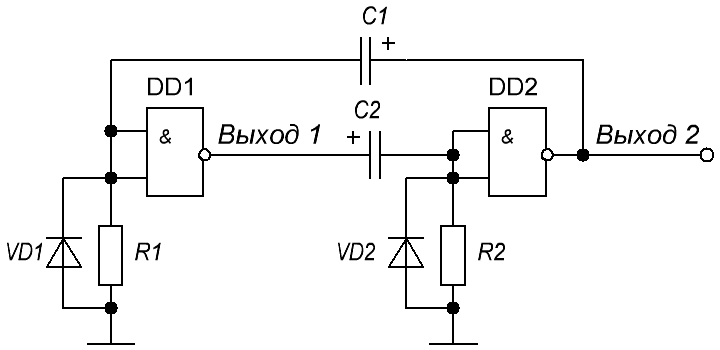
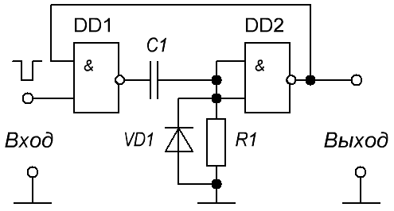

Генераторы на логических элементах
Разнообразные генераторы электрических колебаний могут быть сконструированы на логических элементах. На рис. 1 показана схема мультивибратора, выполненного на двухвходовых логических элементах И—НЕ (2И—НЕ), у которых оба входа соединены между собой. Следовательно, сигналы на входах каждого логического элемента всегда одинаковы и соответствуют либо логическому 0, либо логической 1. По характеру работы такой логический элемент аналогичен логическому элементу НЕ: сигнал на выходе имеет высокий уровень (логическую 1) при низком уровне входных сигналов (соответствующих логическому 0) и наоборот.

Предположим, что на выходе DD1 имеется высокий уровень напряжения (логическая 1), а на выходе DD2 — низкий уровень напряжения (логический 0). Это вызовет зарядку конденсатора С2. Ток зарядки будет протекать от высокого уровня напряжения на выходе 1 через С2 и резистор R2. Напряжение, создаваемое этим током на резисторе R2, обеспечивает логическую 1 на входах DD2 и поддерживает логический 0 на его выходе 2. Конденсатор С1, заряженный перед этим от высокого уровня напряжения, имевшегося на выходе DD2, разряжается через небольшое выходное сопротивление DD2, корпус и диод VD1.
По мере зарядки конденсатора С2 ток зарядки и напряжение на входах DD2 уменьшаются. Когда напряжение, на входах DD2 уменьшится до уровня, соответствующего логическому 0 (примерно 0,3...0,4 В), напряжение на выходе 2 начнет увеличиваться и достигнет высокого уровня, соответствующего логической 1. Высокий уровень напряжения с выхода 2 через конденсатор С1 будет передан на входы DD1, и на его выходе 1 появится низкий уровень напряжения, соответствующий логическому 0. Конденсатор С2 начнет разряжаться через выходное сопротивление DD1 и диод VD1, а конденсатор С1 будет заряжаться от напряжения высокого уровня на выходе 2 через резистор R1. Ток зарядки этого конденсатора будет создавать на резисторе R1 и, следовательно, на входах DD1 напряжение логической 1, поддерживая на выходе 1 логический 0. С течением времени ток зарядки конденсатора С1 и напряжение на входах DD1 будут уменьшаться. Когда напряжение на входах DD1 станет равным логическому 0, на выходе 1 появится логическая 1, а на выходе 2 — логический 0. Мультивибратор вернется в первоначальное состояние и описанные выше процессы начнут повторяться. Если R1=R2 и C1=С2, то на выходах DD1 и DD2 будут формироваться чередующиеся положительные и отрицательные прямоугольные импульсы равной длительности и амплитуды.
Автоколебательный мультивибратор, показанный на рис. 1, можно преобразовать в одновибратор, или ждущий мультивибратор, исключив конденсатор С1 и цепочку, состоящую из элементов VD1 и R1 (или исключив элементы C2, VD1 и R1). Схема такого одновибратора показана на рис. 2.

В исходном состоянии на входе DD1 поддерживается высокий уровень напряжения — логическая 1. Напряжение на объединенных входах DD2 равно напряжению на резисторе R, которое создается на нем входным током DD2. Так как этот ток мал, то можно считать, что на входах DD2 действует низкий уровень напряжения — логический 0, а на выходе — логическая 1, которая подается на второй вход (верхний по схеме) DD1. Таким образом, на каждом входе DD1 имеется логическая 1, и напряжение на его выходе равно логическому 0. Напряжение на конденсаторе С также близко к нулю.
При поступлении на вход отрицательного импульса (логического 0) в соответствии с таблицей состояний логического элемента И—НЕ на выходе DD1 устанавливается высокий уровень напряжения (логический 0) и начинается зарядка конденсатора С1. Ток зарядки протекает от выхода DD1 через конденсатор С1 и резистор R1. На резисторе создается положительное напряжение, которое в виде логической 1 поступает на входы DD2 и создает на его выходе напряжение низкого уровня (логический 0). Напряжение логического 0 с выхода DD2 поступает на второй (верхний) вход DD1 и поддерживает на его выходе высокий уровень напряжения (логическую 1) после прекращения действия входного импульса.
По мере зарядки конденсатора С1 напряжение на входах DD2
уменьшается. Когда уровень этого напряжения станет равен логическому 0,
напряжение на выходе DD2 будет соответствовать логической 1, которое
передастся на второй вход DD1. На обоих входах DD1 будут действовать
напряжения высоких уровней, а на выходе — напряжение низкого уровня.
Конденсатор С1 будет разряжаться почти до нулевого напряжения через
выходное сопротивление DD1 и диод VD1. В таком состоянии одновибратор
будет находиться до прихода очередного отрицательного импульса на вход.
Каждый входной импульс формирует на выходе одновибратора
отрицательный импульс прямоугольной формы. Длительность этого импульса
определяется сопротивлением резистора R1 и емкостью конденсатора С1: чем
больше значения R1 и С1, тем больше длительность выходного импульса.
Диод VD1 используется для уменьшения времени разрядки конденсатора С1 и улучшения тем самым формы выходных импульсов. Аналогичную роль выполняют и диоды VD1 и VD2 в мультивибраторе, показанном на рис. 1.
Источники
1. Бирюков С. А. Цифровые устройства на МОП-интегральных микросхемах, вып. 1132, с. 60-65; вып. 1220, с. 105-111. - М.: Радио и связь, 1990; 1996 (МРБ).
2. Нечаев И. Пробник логический без источника питания. - Радио, 1990, # 10, с.83,84.
3. Бирюков С. Генераторы и формирователи импульсов на микросхемах КМОП. Радио,1995,# 7,с.36,37.
4. Киверин Н. LC-генератор на логических элементах. - Радио,1990,# 7,с.55.